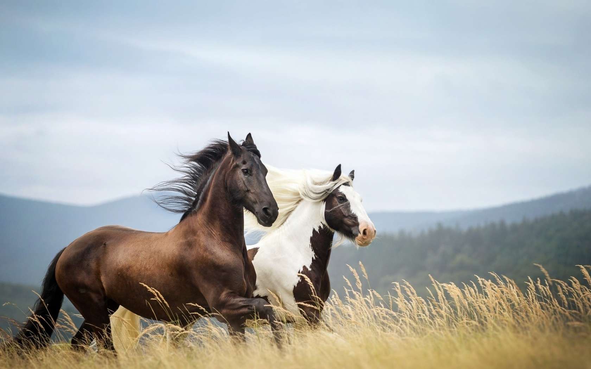
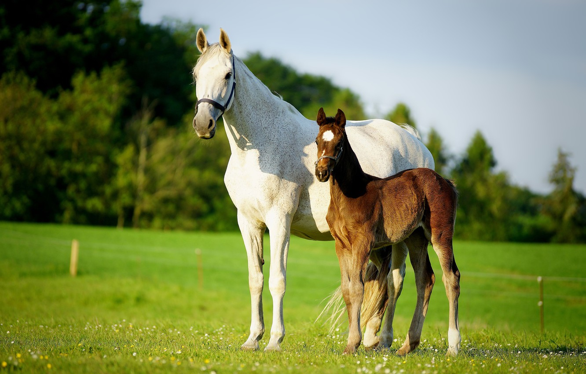
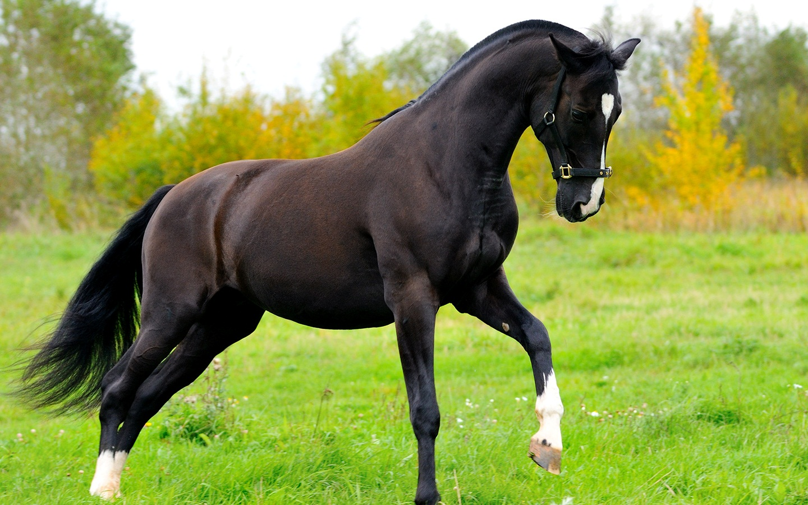

Эксмурский пони — это самая древняя порода английских лошадей, которая напоминает тарпана. Эксмурские пони живут полудикими табунами на плато Эксмур (юго-запад Англии). Эксмурские пони — прямые потомки кельтского пони. Этим лошадкам обычно ставят клеймо в виде звезды с четырьмя лучами и с номером табуна, к которому они принадлежат.

Шетлендский пони – очень резвая лошадь, одна из самых маленьких пород в мире. Она формировалась на Шетландских и Оркнейских островах Атлантического океана более одного тысячелетия. Считается одной из самых древних пород в мире. Они напоминают миниатюрных тяжеловозов, так как у них маленькие толстые ноги, тяжелая голова, широкое туловище, густая шерсть и длинные пышные грива и хвост.

Дульменский пони обитает в Вестфалии. Это единственный существующий по сей день исконно немецкий пони. Сейнер, некогда бродивший по Тевтобуpгскому лесу, вымер. Последнее стадо дульменских пони, насчитывающее около 100 особей, живет в районе Мейнерцхагеня. Они смешанного происхождения, их использовали для выведения старой ганноверской породы.

На первый взгляд этот норвежский пони не так уж отличается от азиатской дикой лошади (лошадь Пржевальского), обладая схожим окрасом с черной полосой вдоль спины и такой же стоящей гребнем гривой. Однако голова фьорда более благородного вида и пропорциями он больше напоминает пони с наскальных рисунков викингов, найденных в Норвегии.